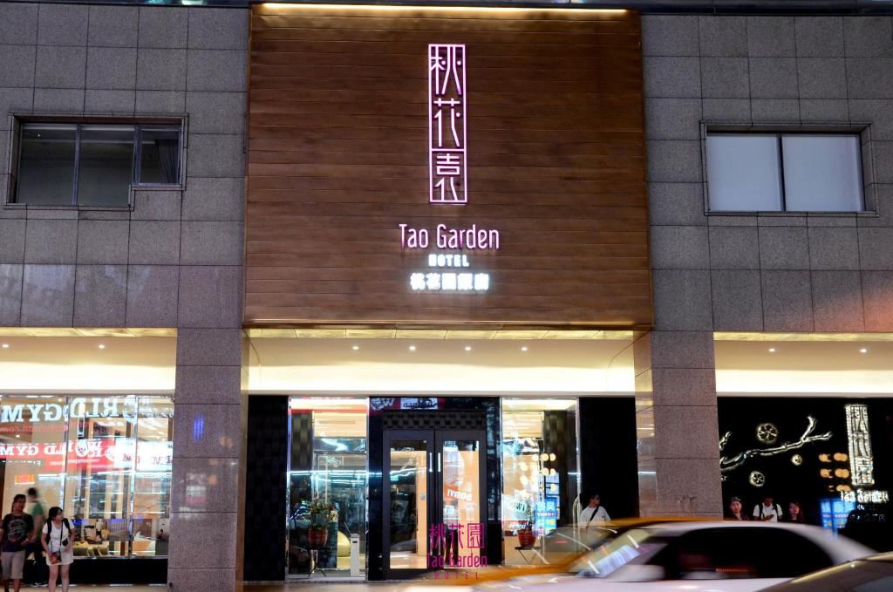
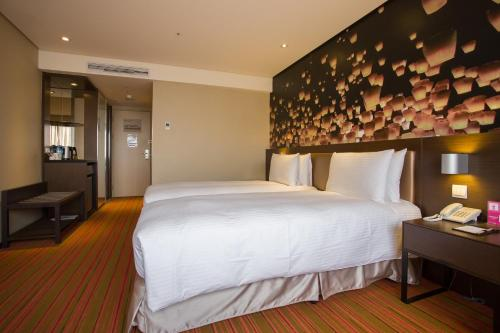

Ini adalah halaman Bahasa Indonesia
|
Di Bahasa Indonesia, saya belajar tentang opini orang dan opini saya terhadap sebuah hotel
|
|   |
Pengunjung Tao Garden hotel biasanya orang lansia atau pekerja, pekerja ini biasanya berumur 20 sampai 30 tahun. Saya bersama teman saya mewawancari sebuah pengunjung, ia sebuah pekerja di Taiwan, Kesan ia adalah Hotelnya bagus untuk hotel bintang 4, tapi menurut saya hotel ini bagus karena buffet sarapan yang banyak pilihan dan enak. Perbandingan Tao Garden hotel dengan Fullon Hotel dan Park city hotel, Tao Garden hotel lebih tidak bagus dari Fullon Hotel dan Park city hotel, karena Tao Garden hotel lebih kecil dan matrasnya lebih keras. Aspek bagus hotel ini adalah buffet sarapannya yang enak dan banyak pilihan, Aspek kurang bagus hotel ini adalah matrasnya yang keras dan kamar mandinya yang kecil. Orang yang kita wawancari setuju dengan kamar mandi dan kamar kecil tapi menurut ia aspek bagus hotel merupakan dekat sama bandara dan station MRT. Opini saya terhadap hotel ini adalah hotel ini bagus untuk hotel bintang 4, tapi lebih baik Fullon Hotel dan Park city hotel.
Ulasan Tao Garden Hotel
Tao Garden Hotel, Hotel mengabungkan seluruh TaoYuan
Tao Garden hotel terletak di Tao Yuan, Taiwan yang berbintang 4 dan berdiri pada Tahun 2013. Hotel ini sangat dekat dengan bandara dan stasiun MRT. TaoYuan terdapat tempat-tempat yang menarik seperti Daxi old street, Tai Mall, Hutou shan park. Daxi old street dan Tai Mall merupakan tempat untuk Belanja dan jalan jalan sedang Hutou shan park adalah taman yang bagus, biasanya untuk melihat alam atau beristirahat. Taiwan merupakan tempat yang sangat populer untuk Teh Buble atau Boba. Night market Taiwan adalah tempat orang biasanya Belanja atau makan malam karena makanan di night market sangat murah.
Tao Garden Hotel terletak di No. 151號, Fuxing Rd, Taoyuan District, Taoyuan City, Taiwan 330. Hotel Ini terdapat Gym, Restoran, Wifi Gratis Kebun dan lain lainnya. Hotel tersebut terdapat 12 dan luas kamar yang saya inapi berluas 25m^3, kamar ini terdapat meja, TV, 2 ranjang, kursi, Kamar mandi, tempat untuk memanaskan air dan kulkas kecil. Hotel ini dekat dengan bandara dan stasiun MRT dan jaraknya ke pusat kota adalah 1KM. Kamar terbesar mereka adalah 99m^3, ada 2 kamar yang memiliki luas ini. Kamar yang terdapat pada 3 Maret 2025 adalah Ashley Room yang berharga 1.954.375 IDR, Deluxe Double room yang berharga 1.563.505 IDR dan Comfort Twin room yang berharga 1.133.538 IDR. Setiap kamar terdapat 2 kasur kecuali Ashley Room yang terdapat 1 Queen size bed. Hotel ini dapat dihubungi di nomor +886 3 286 833 atau di website http://www.taogarden.com.tw/en.
Menurut saya, keunggulan Hotel ini adalah Sarapan yang enak dan sarapan yang memiliki banyak pilihan. Keunggulan Hotel ini juga merupakan fasilitas dalam kamar yang lengkap seperti kulkas dan pemanas air serta meja dan kursi. Saya bersama teman saya juga mewawancarai seorang lokal Taiwan tentang Keunggulan hotel. Kata dia, keunggulan hotel ini merupakan Dekat dengan semuanya seperti pusat kota, bandara dan stasiun MRT.
Menurut saya, Kekurangan hotel ini adalah suasana Hotelnya dan Lift yang sedikit. Lift dalam hotel ini hanya ada 2, menurut saya tidak cukup karena ada banyak pengunjung. Kekurangan Hotel Ini juga adalah Kasur yang keras dan selimut yang tipis dan kecil. Menurut lokal yang kita wawancarai, Kekurangan Hotel ini adalah kamar yang Kecil, Mungkin ia membeli kamar yang kecil tapi kamar yang saya dapatkan cukup luas karena terdapat 2 ranjang.
Hotel ini bagus untuk aksebilitasnya, dekat dengan bandara dan stasiun MRT. Tapi Hotel ini suasana dan liftnya kurang bagus serta ranjang yang sedikit keras. Saran saya untuk hotelnya adalah matras atau selimut yang lebih bagus
Kesimpulannya adalah hotel ini bagus. tapi rekomendasi saya adalah hotel ini lebih bagus untuk sekali atau dua kali menginap. Karena hotel ini bagus tapi tidak bagus untuk menginap lama.